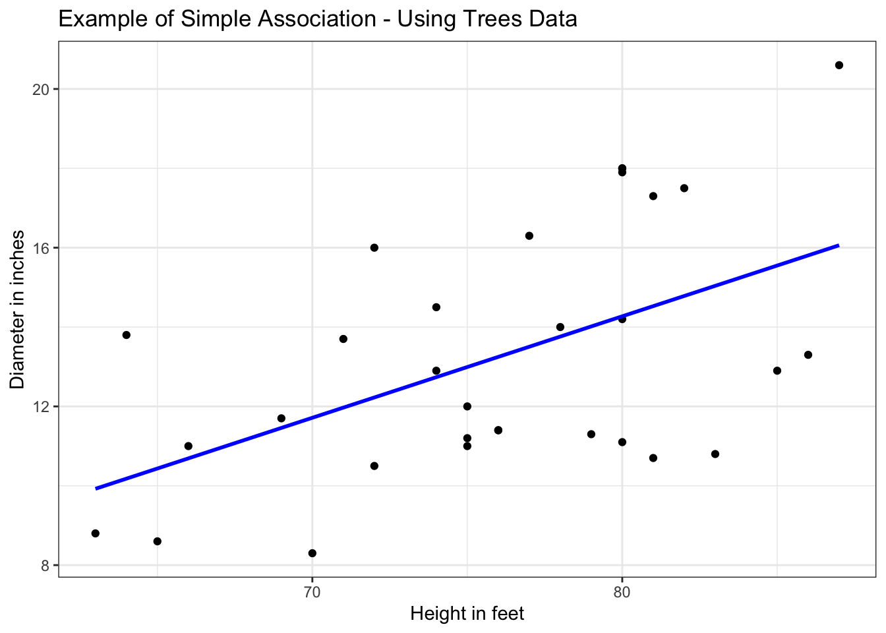

Code
library(tidyverse)
library(katex)Learning how to used Generalized Linear models in R
Ana Bravo & Tendai Gwanzura
Florida International University
Robert Stempel College of Public Health and Social Work
July 16, 2023
In this presentation, we will be discussing how to use the Generalized Linear Model (GLM) method using count data in the R programming language. We will show how to clean and wrangle the data, show necessary columns to execute our method, discuss assumptions held, showcase the code used to run this GLM, and the interpretation of our output results.
As you know, a simple linear regression has two major components: a Y, dependent outcome and an X, which is your independent or your predictor variable. the model looks something like this:
E(Y|X) = \beta_0 + \beta_1 where \beta_0 is your intercept and \beta_1 is your slope. A linear model is a function, that us used to fit a data. We often use this method to see the association, or strength in association between two variables of interest:
# load data:
data(trees)
#rename variables:
names(trees) <- c("DBH_in","height_ft", "volume_ft3")
# simple model:
model <- lm(DBH_in ~ height_ft, data = trees)
# plot:
simple_trees <-
#data
ggplot(data = trees) +
# x and y
aes(x = height_ft, y = DBH_in) +
#labels
labs(title = "Example of Simple Association - Using Trees Data",
x = "Height in feet",
y = "Diameter in inches") +
# add points
geom_point() +
# add the lm
geom_smooth(method = "lm", color = "blue", se = FALSE) +
# add a simple theme
theme_bw()
# actual plot:
simple_trees
Often you will find this model writen in this form:
E(Y|X) = \beta_0 + \beta_1 + \varepsilon where \beta_0 and \beta_1 are our coefficients that need to be estimated and $ $ used for more complex lines Our goal is to see the association between an outcome with an exposure.
Before diving into the generalized models, lets quickly overview the assumptions of linear regression.
Something to note, that in the simple explanation above we are assuming our Y variable (remember one of the points we talked above above? that y holds a specific distribution!) is continuous. So lets talk about our Y variable having a count distribution.
the term “generalized” is a big umbrella term used to describe a large class of models. Our response variable y_i is following an exponential family distribution with a mean of u_i which is sometimes non-linear! However McCallagh and Nelder considered them to be linear because our covariate affect the distribution of y_i only through linear combination.
there are three major components of a GLM:
log(\pmb{\mu}) = \alpha + \beta_1x_1 + ... B_nx_n + \epsilon
a Poisson regression models how the mean of a discrete (or we can say count too!) response variable Y depends on our explanatory X variables. Here is a simple look at the Poisson regression:
log \lambda_i = \beta_0 + \beta x_i where the random component: the distribution of Y is the mean of \lambda and the systematic component is the explanatory variable (or your X variables, which can be continuous or categorical) that is linearly associated. Or can be transformed if non-linear, and the link function is the log link stated in the section above (link the section number here?)
An advantage of using GLM over a normal line model is the link function gives us more flexibility in modeling and this model uses the Maximum likelihood estimate. Additionally we can use different inference tools like Wald’s test for logistic and Poisson models.
\pmb{\mu} = exp(\alpha + \beta x) = e^\alpha (e^\beta)^x where one unit increase in X has a multiplicative impact on your e^\beta power on the mean. (More on this a little later in the interpretation section!)
when your modeling count data, the link scale is linear. So the effects are additive on the link. While your response scale is nonlinear (this is on the exponent) and so the effects are multiplicative. makes sense? we will work out an example now!
Lets import the crabs.txt data from the University of Florida’s open-source data files.